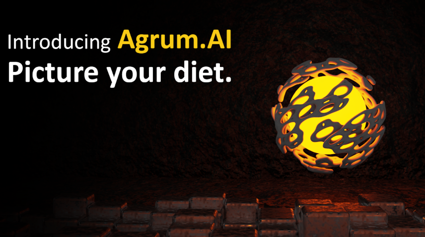

Agrum AI : Picture your diet
Mots-clés : IA, LLM, Python, GCP, CI/CD, API
Agrum.ai est une application mobile qui scanne vos plats via IA, décompose les ingrédients et évalue leurs apports nutritionnels, proposant ainsi des menus équilibrés pour favoriser une alimentation saine.